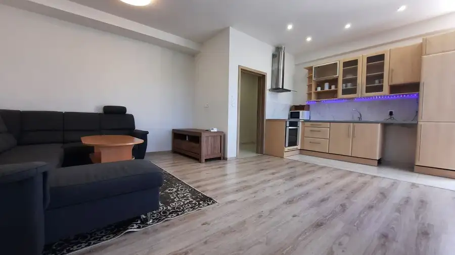
Aktuálna ponuka
15 nehnuteľností, predovšetkým byty, pozemky, chaty a chalupy. Každá má vlastnú stránku s fotkami, popisom a mapou.
Prezrieť ponukuMichal JanásekRealitný maklér
Realitný maklér · Schneider & Partners Co., s. r. o.
Predaj a prenájom nehnuteľností · Žilina, Strečno, Povina
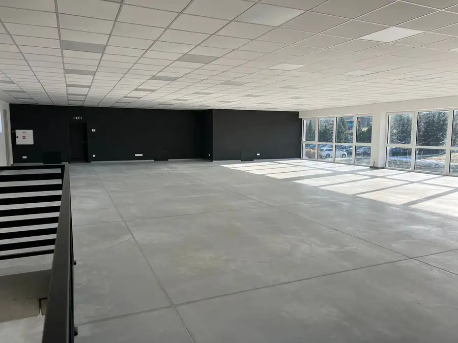
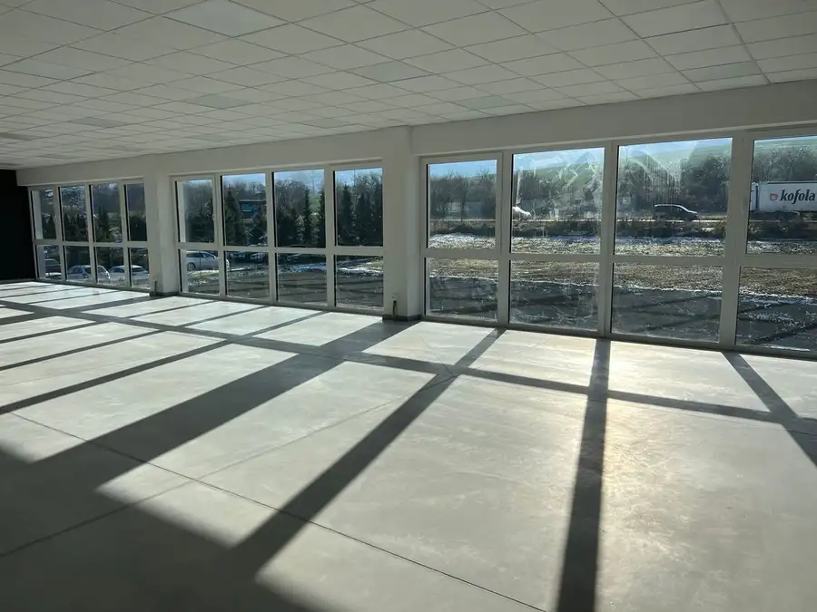
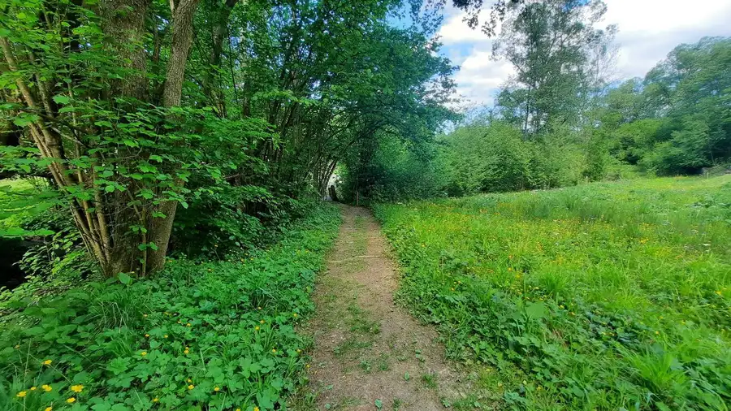
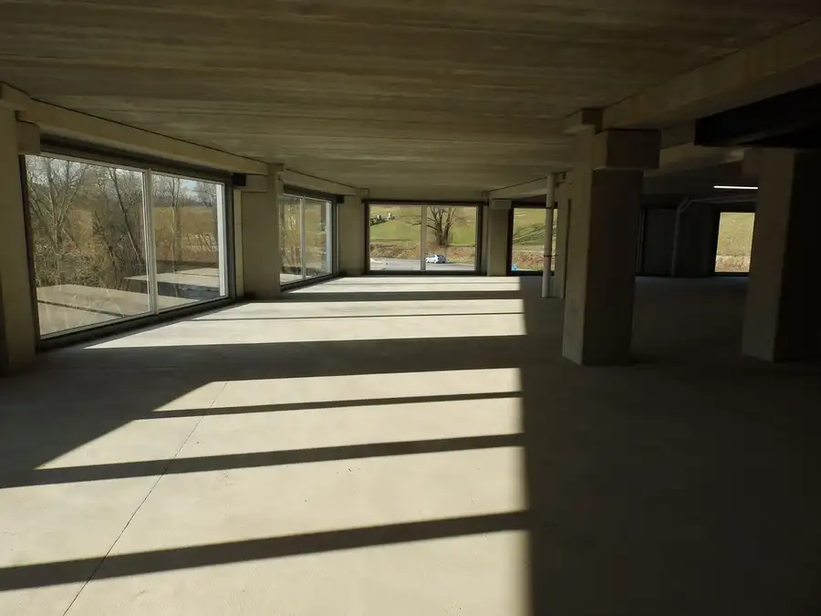
Nebytové priestory10 Cena dohodouPonúkame na prenájom - Administratívne priestory Royova 1600 m² Ponúkame na prenájom moderné a priestranné administratívne priestory vhodné pre open space alebo samostatné kancelárie. Nachádzajú sa vo veľmi…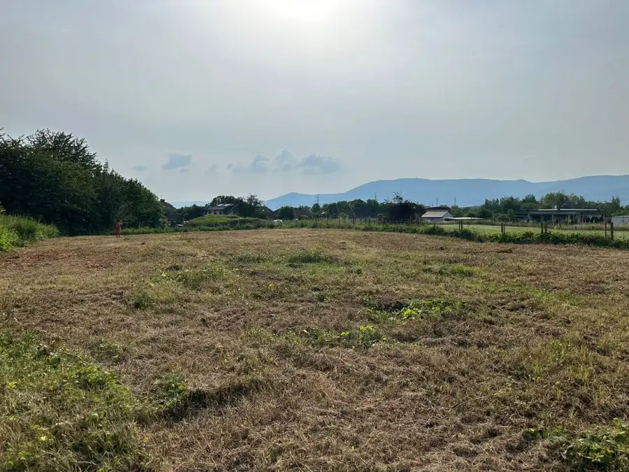
Pozemok2 Cena dohodouPozemok na Predaj 5500 m2, Mesto: Žilina Žilina 5500 m² Žilina - Mesto, ktoré neprestáva prekvapovať svojimi možnosťami a príležitosťami. Dnes by sme vám radi predstavili skvelú príležitosť v podobe…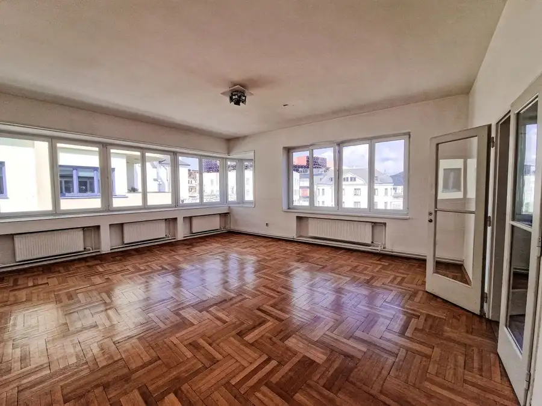
Nebytové priestory7 Cena dohodouNA PRENÁJOM | Kancelárske a administratívne priestory v centre Žiliny Hlinkovo-namestie, Hlinkovo námestie 164 m²3. podlažie Celková výmera priestorov je 164 m², nachádzajú sa na 2. nadzemnom podlaží budovy. Priestory pozostávajú zo štyroch samostatných kancelárií, z…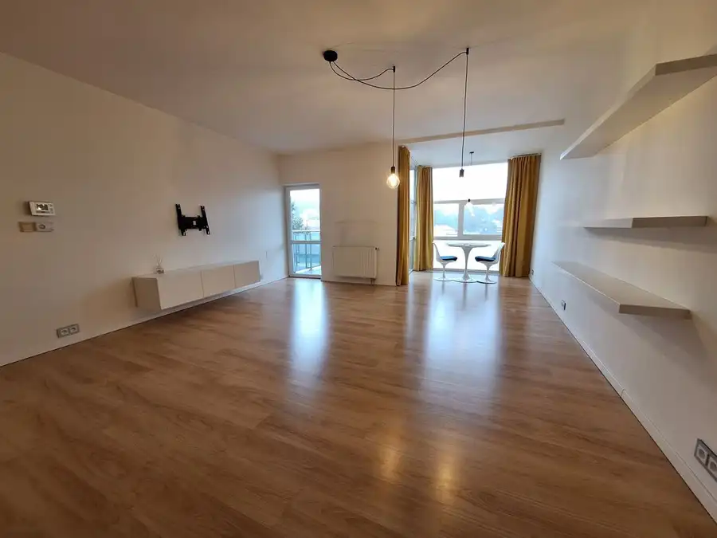
Byt10 Cena dohodou2-izbový byt Eurohomestar - PRENÁJOM Borik, Bôrik 2-izbový75 m²4. podlažie Podlahová plocha bytu je 69 m2. Dispozícia pozostáva z vstupnej chodby kde je umiestnená vstavaná skriňa a samostatná toaleta, ďalej sa prechádza do…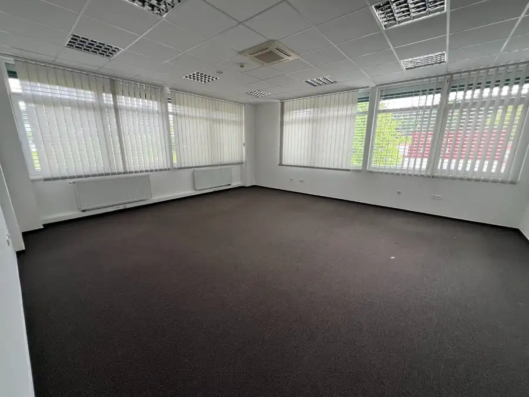
Nebytové priestory10 Cena dohodouKancelárske priestory na prenájom (20 - 600 m2) / Považská Bystrica Hliny 30 m² Budova pozostáva z prízemia a dvoch nadzemných podlaží s výťahom a ponúka na prenájom priestory od 20 m2 do 600 m2. Aktuálne máme k dispozícii: 1. 21…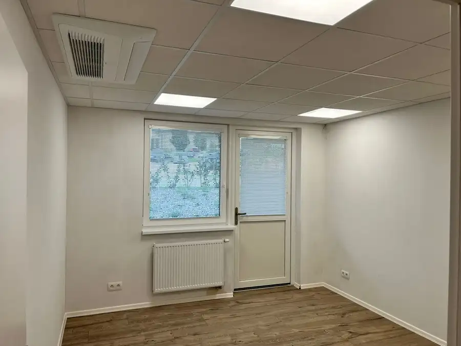
Nebytové priestory10 Cena dohodouNa prenájom Kancelárske priestory o celkovej výmere 102 m2 Rozkvet 102 m² Ponuka na Prenájom kancelárskych priestorov v Považskej Bystrici v projekte HELENKY. Jedná sa o samostatné kancelárie, ktoré ponúkajú dostatočný…Tomuto výberu zatiaľ nezodpovedá žiadna ponuka. Napíšte mi, čo hľadáte.
Volám sa Michal Janásek. Som realitný maklér kancelárie Schneider & Partners Co., s. r. o. a pôsobím predovšetkým v lokalitách Žilina, Strečno, Povina a Royova (Žilinský kraj).

15 nehnuteľností, predovšetkým byty, pozemky, chaty a chalupy. Každá má vlastnú stránku s fotkami, popisom a mapou.
Prezrieť ponuku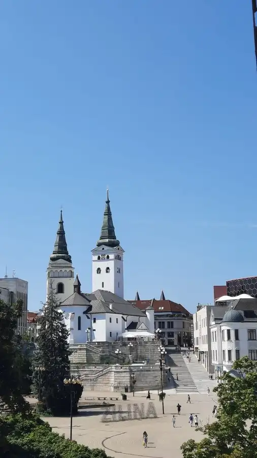
Žilina, Strečno, Povina, Royova, Hlinkovo námestie a okolie. Ponuku si môžete prezrieť podľa lokality.
Nehnuteľnosti v lokalite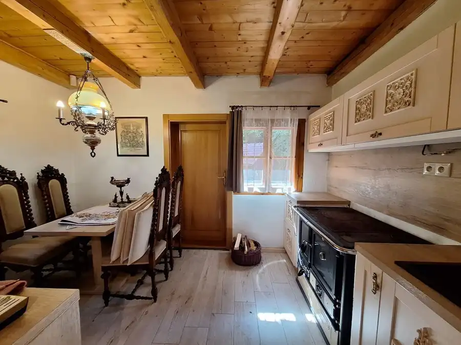
Odhad trhovej ceny, príprava prezentácie, obhliadky, zmluvy a odovzdanie nehnuteľnosti.
Dohodnúť stretnutieNa čo sa pýtate najčastejšie, skôr než sa stretneme.
Odhad trhovej ceny vychádza z aktuálnych ponúk a predajov v lokalite, nie z cenníkových tabuliek. Podmienky Vám poviem pri prvom telefonáte.
Najprv obhliadka a odhad ceny, potom príprava prezentácie (fotografie, popis, inzercia), obhliadky so záujemcami, rezervačná zmluva, kúpna zmluva, návrh na vklad do katastra a odovzdanie nehnuteľnosti. O každom kroku viete vopred.
Najrýchlejšie cez WhatsApp alebo telefón. Termín stretnutia alebo obhliadky dohodneme podľa Vás.